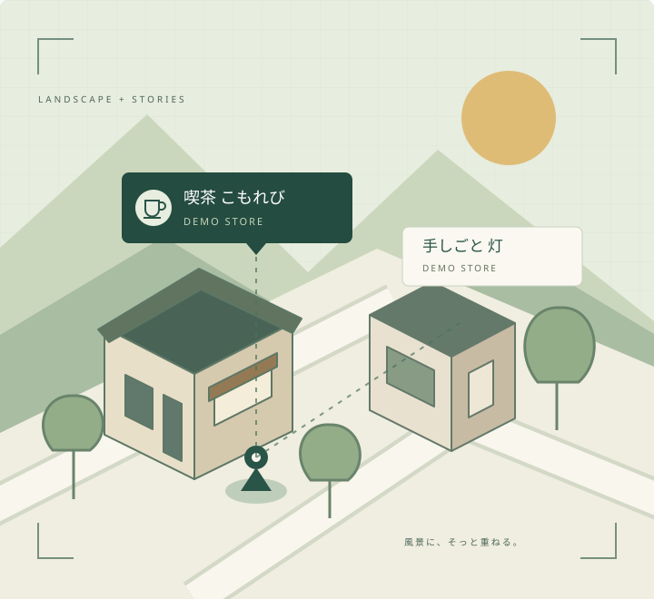

かざして、気づく。
カメラの先にある店の情報を、風景に重ねて。看板だけでは伝わらない魅力に出会います。
風景の、その先の出会い。
街の景色は、そのままに。
目の前の風景に、小さな店の物語を重ねる。
GeoLayerは、街と人の新しい接点をつくります。
このサイトは架空店舗を用いた試作デモです。

風景を守ることと、
店を知ってもらうこと。
その両方を、ひとつの体験に。
LOCAL STORIES / DEMO
気になる店を選んで、広告ページへ。
4つの架空店舗で、出会いの先を体験してください。
掲載する店舗・ニュース・営業時間はすべてデモ用です。実在店舗への来店や購入を案内するものではありません。
ONE PLACE, THREE WAYS
街の中で、自分に合う見つけ方を。
GeoLayerが目指す、3つの入口です。
カメラの先にある店の情報を、風景に重ねて。看板だけでは伝わらない魅力に出会います。
周辺の店を地図や一覧で確認。方角に迷うときも、気になる店の情報へたどり着けます。
店ごとのQRから、同じ広告へ。アプリでもWebでも、店の物語を受け取れる構想です。
QR読取・アプリ連携は準備中LANDSCAPE FIRST.
増やしたいのは、看板ではなく出会い。
GeoLayerは、そのための小さな入口をつくっています。